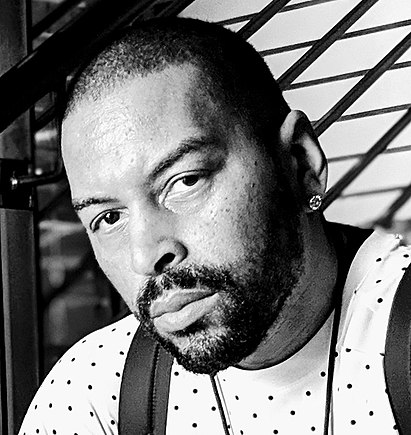
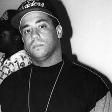

N. W. A (Niggaz Wit Attitudes — «Ніггери з позицією») — американський хіп-хоп-гурт з Комптона, Каліфорнія, яку багато хто вважає одним із засновників піджанру гангста-реп. Ця група існувала з 1986 по 1991 роки і викликала велику кількість суперечок у зв'язку з відвертим характером їх текстів. Згодом група була заборонена на багатьох головних радіостанціях США і навіть іноді заборонялися їх гастролі. Група продала на сьогоднішній день близько 30 мільйонів копій своїх дисків тільки в США. Їх перший альбом, Straight Outta Compton, позначив початок нової ери гангста-репу, бо їх творчість і підняття соціальних проблем були революційними в рамках жанру.
Група була заснована Eazy-E на лейблі Ruthless Records, який він заснував разом з Джеррі Хеллером на гроші від продажу наркотиків. Спочатку група складалася з Eazy-E і Ice Cube, який вже встиг записати на Ruthless Records кілька треків. Продюсером гурту став Dr. Dre, потім в неї вступив DJ Yella. Раніше вони були членами групи World Class Wreckin' Cru
У 1995 році група возз'єдналася в повному складі, але нічого не встигла записати у зв'язку із захворюванням (ВІЛ) та подальшою смертю Еріка (Eazy-E). Наприкінці 90-х Ren, Cube і Dre записали трек і зняли кліп під назвою Hello!
Eazy-E - засновник N. W. A. і власник лейблу Ruthless Records. Після того, як його вигнали з 10 класу середньої школи, почав торгівлю наркотиками, що дало йому великий прибуток. На ці гроші він разом з Джеррі Хеллером заснував N. W. A. Після приголомшуючого успіху альбому Straight Outta Compton з групи пішов Ice Cube. Після цього Eazy стає фактичним лідером групи. Після випуску Niggaz4Life і відходу Dre група остаточно розпадається, а ворожнеча між Eazy-E і Dr. Dre вирувала протягом декількох наступних років.
Dr.Dre прийшов у групу після відходу з World Class Wreckin' Cru. Зустрівши Ice Cube в 1986 році, почали разом писати тексти для Ruthless Records, потім Eazy-E заснував N. W. A. Після фінансових розбіжностей, Dre пішов з групи в 1991 році
Arabian Prince — заснував групу разом з Dr. Dre і Eazy-E у 1986 році. Залишив у 1988 році. Будучи в складі групи записав такі треки, як «Panic Zone» і «Something 2 dance 2». Є співпродюсером деяких треків.
Ice Cube Прийшов у групу другим після Eazy-E, але покинув групу після виходу першого альбому. Після відходу неодноразово піддавався насмішкам з боку решти учасників групи, але Cube не дозволяв заплямувати свою репутацію і відповідав зустрічними диссами (disrespect — неповага) настільки добре, що після дисса «No Vaseline» N. W. A. так і не змогли гідно відповісти.

MC Ren Вступив в групу в 1986 році, у віці 17 років. Посприяв цьому Eazy-E. Після розпаду групи в 1991 почав сольну кар'єру.
DJ Yella Прийшов в групу разом з Dr. Dre. Залишався в N. W. A. до її кінця, а після розпаду залишився разом з Eazy-E на лейблі Ruthless Records. Після смерті Eazy-E записав сольний альбом, присвячений Еріку.
Альбоми
Сингли
У 2015 році був знятий фільм «Просто із Комптона», який розповідає про злети й падіння хіп-хоп групи N. W. A. Роль Ice Cube виконав його рідний син — О'Ші Джексон — молодший.
N.W.A